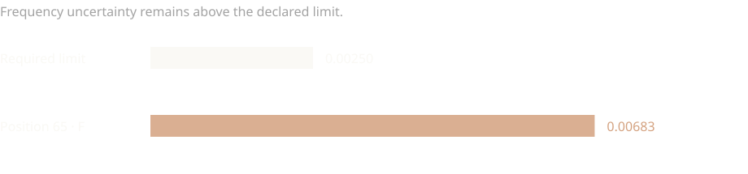

Where exploration is limited
We can see where exploration falls short.
To understand what is holding the reference back, we looked at individual residue frequencies.

Its uncertainty is more than twice the limit, so this estimate is still too imprecise.
We also never observed 11 residue pairs involving positions 11 and 15, which leaves their uncertainties unknown.